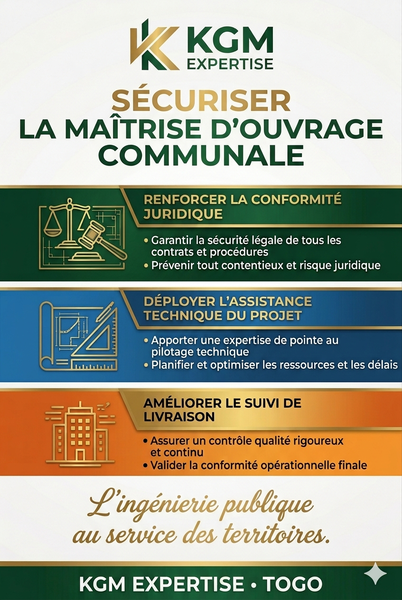

Analyse | 05 Mai 2026
La Maîtrise d’Ouvrage Communale : Le Nouveau Défi de l'Efficacité Publique
Depuis la loi n°2019-006, la commune togolaise est passée d'un statut de sujet administratif à celui d'acteur économique majeur. Cependant, la Maîtrise d’Ouvrage Communale (MOC) se heurte à un paradoxe que le professeur Jean-Bernard Auby décrit comme « l'asymétrie de compétence ».
Sécuriser l'investissement par l'assistance technique
Le renforcement de la MOC est au cœur des discussions avec des partenaires comme le MEDEF International et l'AFD. L'objectif est de transformer les besoins territoriaux en dossiers bancables. KGM EXPERTISE intervient ici comme un catalyseur, sécurisant juridiquement les procédures de commande publique pour éviter les éléphants blancs (Source: Togo First).

L'apport stratégique de KGM Expertise
Nous proposons une assistance à maîtrise d'ouvrage (AMO) chirurgicale, alliant audit de passation et suivi de chantier digitalisé via le SIG. Notre méthode permet de garantir la conformité géographique et technique des ouvrages, assurant ainsi la pérennité des infrastructures scolaires, sanitaires et marchandes de nos collectivités.
Par KODOMMA Gnimdou M., gestionnaire des collectivités locales & Expert SIG.